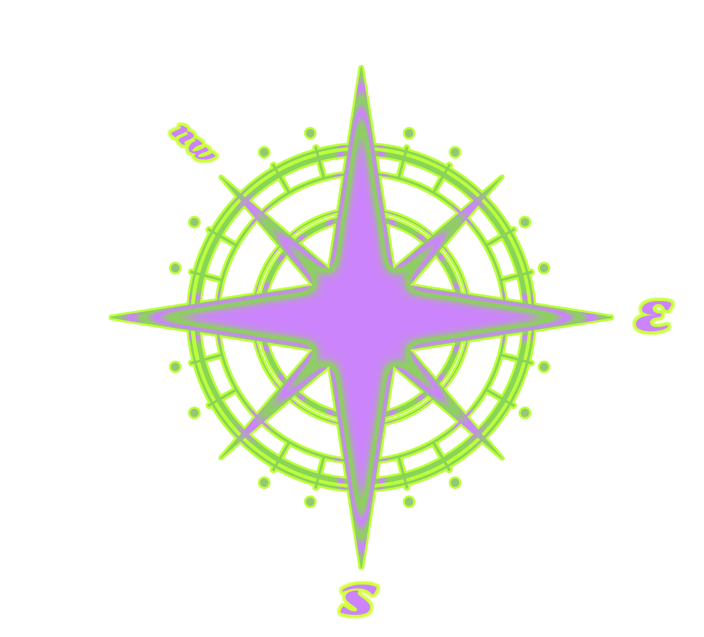
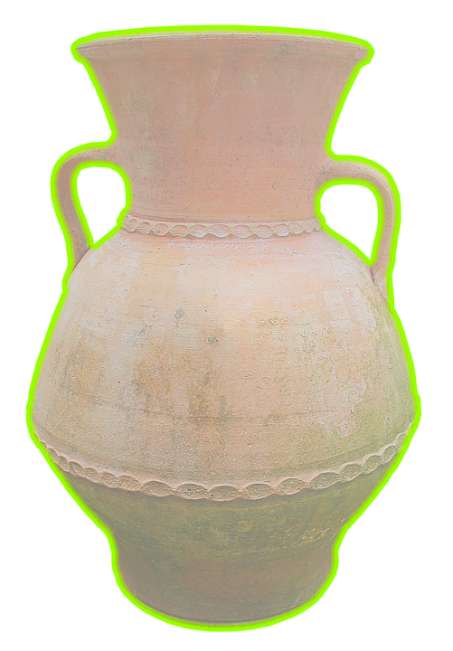
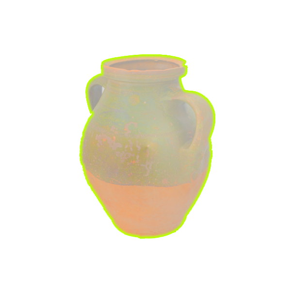

Oxen will be out of luck this month. They'll get stuck sometimes. Life will be far from satisfying.
It will be hard to make a breakthrough.
On the financial front, Oxen should increase their income and decrease their expenditure.
The top thing to be concerned about will be safety. Don't wander about in the evenings, to avoid accidents. There will be family harmony this month.
Luck will be mixed this month. Oxen will need to be patient and prudent in their careers.
In relationships, they should not be jealous, or they will face crises.
Oxen will be vulnerable to some illness this month and should pay attention to their health.
They should also be prudent with investment and not borrow money from others.
Due to a turn for the better this month, there will be some improvement in the careers and finances of Oxen. They are advised to work harder. They will make a good deal of profit from trade or investment.
Their relationships, however, will be in a mess. They will need to calm down and think of a way out. Their health will be stable, but they will need to keep working on it to eliminate disease.
Oxen will face a sharp decrease in luck this month. It will be advisable for them to refuse to travel away from home, to avoid accidents. In relationships, they may encounter the right one.
This month will also be negative for Oxen. They will be out of luck. They should be mentally prepared for some trouble at work in mid-month. They will need to take care of themselves to ward off disease. Because of good luck financially, they will be able to make an investment.
There will be no sign of good luck this month. Oxen will encounter adversity in everyday life and career. Besides, their financial luck will also be severely limited.
Oxen should be prudent in making financial plans and not make any investments. At the same time, they should be careful not to be deceived. They should pay attention to safety in outdoor activities, in case they fall and hurt themselves.
Oxen's financial luck will also stagnate and there will be some damage to their property at the end of the month. Their state of health will improve, but they should never drink too much.
Luck will slowly improve this month for Oxen. In their careers, they will make some progress. If they try their best, they will be refreshed and make a great breakthrough.
With regard to finance, there will also be improvements. All investments will be profitable. Romantic life will be warm and sound this month, and they needn't worry about health.
This month will be a dangerous month, with some latent good fortune. Though tough, bad luck will turn into blessing. Oxen will be stuck in their careers at the beginning, but they will step out of the mud and find solutions to problems, with the help of benefactors.
One development in relationships will be that Oxen will meet a new person. Due to good luck, a wise investment will be greatly rewarded. They should eat healthily and pay attention to safety when traveling.
Still afflicted with bad luck, Oxen will have trouble in their careers. They should mind their own business. They are not recommended to invest on a large scale. They should not be too obsessed in relationships. Their state of health will be fine, but they should take special care of their eyes.
Oxen will be plagued with poor luck at work. They should remain prudent, prepared at any time for unexpected incidents. With better luck on finance, they are recommended to invest and trade. Relationships will be complicated, so they should keep calm to deal with the complications. On the health front, there will be nothing to worry about.
Oxen's luck will have a tendency to improve. If they can win the support of others in their careers, many potential problems might be resolved. Their finances will prosper. They should pay attention to safety at home, to avoid fire or electrical accidents.
In the Pig year of 2019, those born in a year of the Ox are forecast to have great pressure and some frustration in their careers.
In the Pig year of 2019, those born in a year of the Ox are forecast to have great pressure and some frustration in their careers.
In the Pig year of 2019, those born in a year of the Ox are forecast to have great pressure and some frustration in their careers.
In the Pig year of 2019, those born in a year of the Ox are forecast to have great pressure and some frustration in their careers.
H
ow to make your
life choices
Career
On the career front, there will be setbacks. With the help of benefactors,
Oxen will make further progress if they seize the opportunity to work hard.
When the end of the year approaches, Oxen's luck will turn for the better in their careers.
Health
Oxen will face some bugs in their health. Much attention should be paid to cervical problems.
Besides, they should avoid drinking and smoking.
Wealth
On the financial front, Oxen's luck will be steady. When pursuing improvements,
they should be proactive and obey the rules. They should never be too greedy, in case of damage to property.
Love
On the romantic front, life will be smooth this year for Oxen.
Single Oxen will meet different members of the opposite sex. For those who already have a partner,
their high level of luck in love may upset their partners. So, Oxen should deal with this carefully.



F
eng shui
A system of laws considered to govern spatial arrangement
and orientation in relation to the flow of energy (Chi),
and whose favourable or unfavourable effects are
taken into account when siting and designing buildings.
The environment gives energy
that you can use to your own being.
The best way to create your Feng Shui
People born in a year of the Ox can only make a great fortune
with the help of a strong Fire element according to the Five Element Theory.
So they should put some ceramic articles in their offices or bedrooms to bring themselves good luck,
because ceramic articles are heated by fire.
M
onthly
H
oroscope
Based on the Chinese calendar
The calendar is based on lunar cycles or phases of the moon.
Chinese months begin with new moon, and have a full moon on day 15.
As a new moon comes roughly every 29½ days, Chinese calendar months always have 29 or 30 days.
Ancient Chinese people named each lunar month according to what they or nature traditionally did in that month.